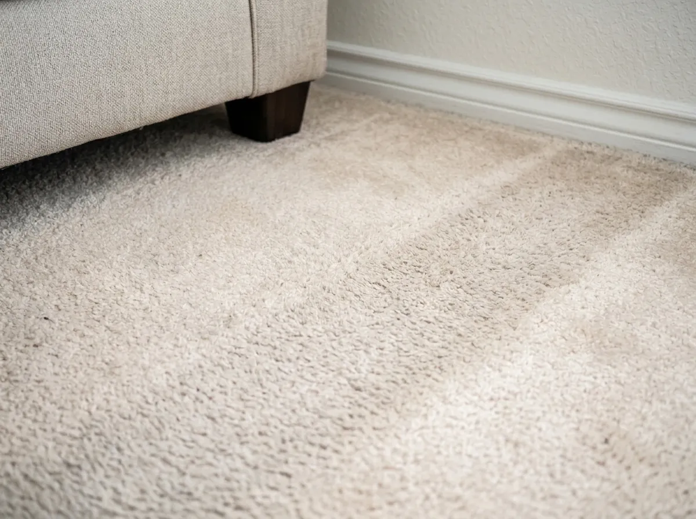
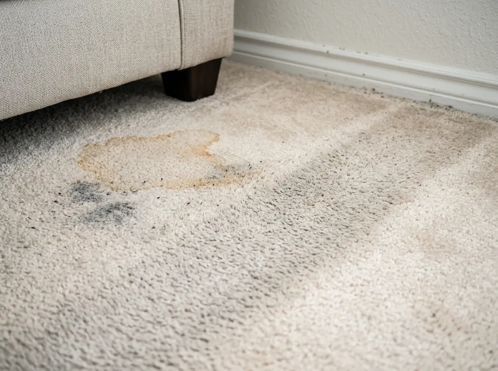

Carpets, tile and furniture that look new again.
Carpet, tile and upholstery cleaning in Spring since 2004. Most carpets dry in about 2 hours.
- 30-day spot & spill warranty
- On-time guarantee
- Kid & pet-safe options
See the difference
Drag to see what a deep clean does.
Pick what needs cleaning, then slide from before to after. Same hot water extraction Josh uses on every job, with no sticky residue left behind.
See my price →

BeforeAfterPhotos shown for demonstration. For real results, read what 366+ Spring-area customers say →
Instant price
See your price before you call.
Pick what you need cleaned. Your estimate updates as you go, then choose a day and time that works for you.
Carpeted rooms
Bedrooms, living rooms, dens. Pre-vacuum included.Tile & grout
Kitchens, baths, entries. Square feet, a rough guess is fine.Furniture & rugs · priced when Josh sees the fabric
Add-ons
What we clean
One careful cleaner for every floor and fabric.
Hot water extraction with soft water and truck-mounted power. Every solution is chosen for your fiber, your soil and your stains.
Carpet cleaning
Deep hot water extraction that lifts matted traffic lanes and stubborn spots, without soaking your carpet.
Tile & grout
Heat, pressure and extraction pull years of grime out of grout lines. Sealing keeps them clean longer.
Upholstery
Sofas, chairs and sectionals. Each fabric is tested first so nothing shrinks, bleeds or overwets.
Leather cleaning & repair
Gentle cleaning and conditioning for leather furniture, plus repair for worn spots.
Oriental & area rugs
Careful cleaning for wool, silk-blend and fine area rugs.
Fabric protector
Pro-applied protector makes spills easier to blot and helps furniture and carpet last longer.
Green Clean
A natural, soap-free option for families with kids, pets or allergies.
Commercial
Offices, clinics and retail in Spring and North Houston, with maintenance plans.
For businesses
Commercial cleaning that keeps your space client-ready.
Offices, medical practices, retail, fitness centers, churches, hotels and banks. Free walkthrough, a written proposal, and maintenance plans that fit your schedule.

Something else to clean?
Mattresses, car carpet and other one-off jobs. Text Josh a photo and he'll tell you if he can help and what it costs.


Why it looks better, longer
Better equipment. Softer water. No shortcuts.
- 1Pre-vacuum in every roomA sealed, hospital-grade filter pulls out pet hair and allergens first. Rubber bumpers protect your walls and furniture.
- 2Commercial water softenerSoft water helps the cleaning solutions work, leaves carpet softer, and helps it dry faster.
- 3Thorough rinse, no sticky residueResidue is what makes carpet get dirty fast. A full rinse means it stays clean longer.
- 4Everything explainedWhy a stain happened, what he's doing, and how to treat spills between cleanings.
Our promises
Three promises, in writing.
If something isn't right, Josh makes it right.
30-day spot & spill warranty
Spill something within 30 days of your cleaning? Call and Josh treats qualifying carpet and upholstery spots free.
On-time guarantee
If we arrive more than 30 minutes outside your window, you get a discount on your cleaning.
100% happiness guarantee
Josh stands behind every job. If something isn't right, tell him.
Reviews
Neighbors say it better.
A few of his 366 Google reviews (5.0 average), plus Yelp and Facebook.
“Joshua was prompt and honest. He told me how to fix my problem myself … I would 100% recommend this company and plan to use them in the future.”
“I had the floors steam cleaned less than a year ago by someone else, and My Pro Cleaner was 1,000 times better. The grout in the busiest part of my kitchen looks like new!”
“We have off white couches which were starting to look beige due to several moves and being placed in storage. Now they look brand new! We will definitely be using them again.”
“Not only did they leave my carpets looking new, but the stench and stains are gone! … The bonus is the products they use are safe for children…”
“Carpet cleaning looks amazing and the mattress cleaning was awesome… If need carpet cleaning, grout tile or upholstery cleaning, Josh is the person.”
“Great job! Josh is an expert in carpet/upholstery care and stain removal. Always explains the process and how you can treat stains between cleanings.”
“Josh got out here and did an INCREDIBLE job. Carpets looked like they were NEW. I actually had some valuables out since I was running around doing a lot of other things and I can say that they are a trustworthy place to work with.”
“I had them in to clean the tile floor. They were quick and efficient … The floor looks like it is new. Great job - thanks!”
“Josh did a great job with cleaning the carpets (including stain removal) and grout cleaning. He came as a recommendation on our neighborhood Facebook page… Very professional, friendly, prompt and VERY reasonable prices.”
About Josh
Cleaning carpets since 1996. His own company since 2004.
“I was first introduced to carpet cleaning in 1996 when my church told me about a cleaning company that was hiring helpers. In 2004, I started my own carpet cleaning business, called Prestige Carpet Cleaning — which eventually became My Pro Cleaner.”
“Not as a job — but as a craft that requires an extraordinary amount of knowledge and skill to achieve extraordinary results.”

Owner & master cleaner


Service area
Spring, The Woodlands & North Houston.
Based off I-45 in Spring, so we're close to most of north Houston.
26119 Interstate 45 N #303, Spring, TX 77380
281-790-0005 · myprocleaner@gmail.com
FAQ
Good questions, straight answers.
How long will my carpets take to dry?
Usually about 2 hours, and often about 1 hour when Josh sets up air movers. Very dirty carpet can take longer, up to 8 hours. Airflow and humidity matter too, so run your AC and ceiling fans.
What cleaning method do you use?
Hot water extraction, often called steam cleaning, with a commercial water softener. Josh adjusts the method and solution to the fiber, the soil and the stains.
Can you get out pet urine and odor?
Often, yes. It depends on how much there is and whether it reached the pad, subfloor or baseboards. Josh treats the source instead of covering the smell.
Are your solutions safe for kids and pets?
Josh is picky about products and buys from trusted professional suppliers. Ask him about any product, and tell him about kids, pets or allergies. A soap-free Green Clean option is available.
Can every stain come out?
No. Some stains are permanent, like bleach, dye or damaged fiber. Call before trying several store products, since some make stains harder to remove.
Do I need to vacuum first?
No. Every room is pre-vacuumed with a commercial, hospital-grade filtered vacuum before the deep clean.
How often should carpets be cleaned?
Most carpet makers suggest about once a year. Homes with pets, kids, allergies, light carpet or heavy traffic often need it more.
Will this meet my carpet warranty?
Usually. Many carpet warranties require periodic hot water extraction. Check your warranty's wording, and Josh can give you a receipt.
Why aren't you the cheapest coupon in the mailbox?
Results come from training, equipment, chemistry, rinsing and time spent in your home. Very cheap offers often mean rushed work or upsells once the truck arrives.
Ready for floors you're proud of?
See your price in 30 seconds and pick a time. Or text Josh a photo of the stain and he'll tell you what he can do.
Do we come to your home?
Type your address and see it right away. Josh serves homes and businesses across north Houston.